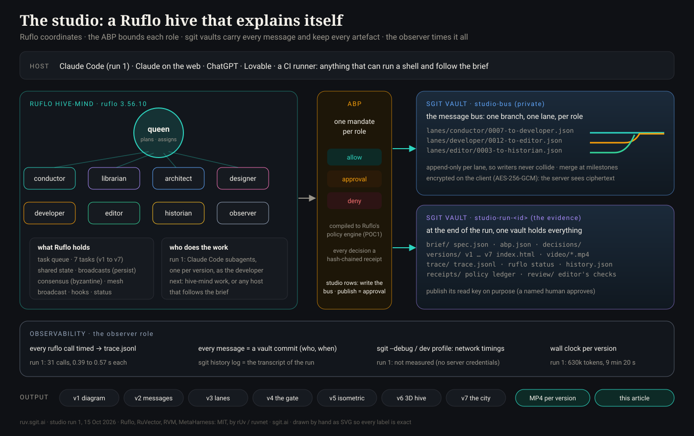

Articles · No. 1
Abstract. rUv's Ruflo can run a hive: a queen that plans and workers that specialise. sgit vaults can carry every message between them, encrypted and versioned, and keep everything they make. Put the two together and point them at one job: explain, in animation, what the two do together. The explanation is then also the proof. This article is the plan and the architecture, and the record of run 1: a real Ruflo 3.56.10 hive with a queen and eight roles taken from the SG/Send team (conductor, librarian, architect, designer, developer, editor, historian, observer), seven tasks from a plain diagram to a 3D city of vaults, seven versions built and checked in a browser, every Ruflo call timed. What run 1 did not do is also here: no vault was pushed, because this session had no sgit server credentials.
Explaining a multi-agent system with a slide is hard: the interesting part is what moves. Explaining it with an animation is better, but then the animation is a claim made by someone else. The idea here is to close the loop. Ask a Ruflo hive, whose workers talk through sgit vaults under a written mandate, to make the animation that explains Ruflo, sgit vaults and the mandate. If the run works, three things come out at once: the animation, the vault that shows how it was made, and the measurements of the run. The animation says "this is how it works"; the vault says "and here it is, working".
It also gives a fair test of token efficiency. A hive that broadcasts everything to everyone burns tokens; a hive where each role reads only its lane and the brief does not. The vault makes that visible: who read what, and when.

Five layers, each doing one thing:
| Layer | What it is | What it does in the studio |
|---|---|---|
| Host | Claude Code, Claude on the web, ChatGPT, Lovable, a CI runner | Runs the workers. Anything that can run a shell and follow the setup brief |
| Ruflo hive-mind | ruflo hive-mind (Ruflo 3.56.10, MIT, by rUv) | The queen, the workers, the task queue, shared memory, consensus, broadcast |
| ABP | One Agent Behaviour Policy per studio, a row set per role | Who may write which lane, who may publish (approval), who may reach the network (no one) |
| sgit vaults | sgit-ai 0.21.0: client-side encrypted, versioned, branchable | The bus (studio-bus, a lane per role) and the evidence (studio-run-<id>) |
| Observer | A role, a trace file and the vault history | Times every call and commit; the run's telemetry |
The roles are the ones the SG/Send team already uses in its own repository (library/guides/agentic-setup/v0_4_0__role-ecosystem-guide.md and the ROLE__*.md files in its dev packs), with two adapted for this job: the journalist becomes the editor, and the observer is new.
| Role | In the SG/Send team | In the studio |
|---|---|---|
| conductor | Orchestrates workflow, prioritises, cuts scope | Turns the objective into the seven tasks; decides what ships |
| librarian | Keeps the brief pack and the reality document: "if the reality document doesn't list it, it does not exist" | Keeps spec.json, links every artefact, labels what is proposed |
| architect | Decisions with options and trade-offs, interface contracts | The vault layout, the lane protocol, the version ladder |
| designer | Visual language, palette, motion rules | One palette per role, motion rules shared by all seven versions |
| developer | Implements, bounded: escalates instead of improvising | Builds each version as one HTML file |
| editor | (the journalist, adapted) | Checks every number on screen against the data; cuts words |
| historian | Records the story and its pivot points | Writes what happened from sgit history log |
| observer | (new) | Times every call and commit; keeps trace.jsonl |
The queen is Ruflo's. The conductor is the role that talks to her; the other seven take tasks.
Every message between agents is a file in the bus vault, written with sgit's agent workflow (sgit write <path> --file <local> --push):
lanes/<from-role>/<seq>-to-<to-role>.json one lane per role; only that role writes it
brief/spec.json the librarian's
decisions/<n>-<slug>.md the architect's
versions/<id>/index.html the developer's
review/<id>.md the editor's
trace/trace.jsonl the observer'sEach role writes only its own lane, so writers never collide: in run 1 the lanes are append-only by convention, and the vault history is the transcript; sgit's append mode (below) makes that a guarantee. Each role works on its own vault branch and the conductor merges at milestones, which is how POC2 already handled memory per role. Everything is encrypted on the client (AES-256-GCM); the server holds ciphertext and the vault id.
The ABP rows for the studio are short. Every role: write.file.project yes (its own lane and folder only), send.endpoint.world no (barrier: default-deny egress; libraries come from a pinned CDN). The developer: execute.process.self yes (a headless browser to check its work). Publishing the run vault (create.record.world) is approval: a named human publishes the read key.
The ladder goes from a diagram anyone can read to something nobody needs but everyone remembers. Every version reads its numbers from this site's data (data/report.json, data/abp.json, data/poc2-run.txt) at load time, and labels anything illustrative as illustrative.
| # | Version | What moves | Built with |
|---|---|---|---|
| v1 | A diagram that builds | The architecture, one element at a time | SVG |
| v2 | Messages in flight | Envelopes from the queen to the workers, through the vault, plaintext to ciphertext and back | SVG, CSS |
| v3 | Vault lanes | A subway map of branches: the real POC2 history first, then the studio run | SVG paths |
| v4 | The policy gate | The 11 actions, twice: all through by default; with the ABP, 4 denied, 2 held for a human, 5 through; receipts chain below | Canvas particles |
| v5 | The isometric office | A desk per role, a vault safe, a gatehouse to the world | 2.5D, no library |
| v6 | The hive in 3D | The queen, orbiting workers, an encrypted vault cube, the ABP shell | three.js r128 |
| v7 | The city of vaults | A street per branch, a floor per commit, the ABP as the city wall, receipts as streetlights | three.js r128 |
The observer's job is to make the run measurable, because a hive that cannot be measured cannot be tuned, and "token efficient" is a claim like any other.
| What | How | Run 1 |
|---|---|---|
| Every Ruflo call | poc/poc7-studio/hive.sh and close.sh time each call and append a line to trace.jsonl (seq, actor, command, exit code, start, milliseconds) | 31 calls, none failed, 15.3 s in total, 392 to 572 ms each (the trace) |
| Every message | One vault commit per message: the author, the time, the size, from sgit history log --json | Not run: no sgit server credentials in this session |
| Network | sgit --debug prints network traffic with timing; sgit dev profile profiles one vault operation | Not run, same reason |
| Each version | Wall clock from task to checked file, and the size of the file | 4 min 44 s to 9 min 20 s per version, all seven in parallel; 19 to 31 KB per file |
| Tokens | Per worker, from the host (subagent usage in Claude Code) | 629,857 for all seven builders, 80,674 to 102,599 each; 11 to 19 tool calls each |
On append lanes: sgit already has them. Its performance page describes an append mode where "lanes live at bare/append/{token}/pending/ outside the commit tree, so a write is one account-less POST with no read-modify-write, no commit, no tree rebuild and no lock, it never conflicts with a push and never contends with a read, and the response is deliberately blind". One published vault already uses one: Two games about agent permissions sends anonymous usage events over a write-only append lane to a separate private vault. That is the right primitive for the studio bus and for the observer: each role gets a write-only append lane as its outbox (it can add, never read or rewrite), and the conductor, holding the read key, drains the lanes into the run vault at milestones. Run 1 used the convention (one writer per lane, in the commit tree) because no server was used; the 0.21.0 CLI lists no append command, so the next run starts from sgit's append documentation rather than from the CLI.
ruflo hive-mind init (hierarchical-mesh, byzantine consensus), then spawn once per role: ruflo hive-mind status lists the queen and eight workers, idle, with seven tasks queued (v1 to v7). The conductor broadcast the brief; the librarian stored the spec's path in hive memory.hive-mind work, spawn --claude), with permission prompts skipped by default; run 1 did not, on purpose.hive-mind memory -a set, which printed OK but did not persist to the next CLI call in 3.56.10 (the state file kept only broadcasts); broadcasts do persist, so the script uses them.policy-anchor-log-missing: Ruflo anchors each project's policy ledger outside the project (~/.config/ruflo/policy-trust/), so a vanished ledger looks like tampering. The fix was not to remove the anchor but to give every run its own folder (work-<epoch>), which the script now does.SGIT_TOKEN, closes that gap; the setup brief has the steps.A voice note by Dinis Cruz on 15 October 2026, after The scripted talk on the sgit newsroom. Roles from the SG/Send repository (the-cyber-boardroom/SGraph-AI__App__Send, library/guides/agentic-setup/), read on 15 October 2026. Ruflo 3.56.10 (ruflo hive-mind --help, run in this repository); sgit-ai 0.21.0 (sgit help all). Built and run by a Claude Code session in this repository; the hive script is poc/poc7-studio/hive.sh, the spec poc/poc7-studio/spec.json.